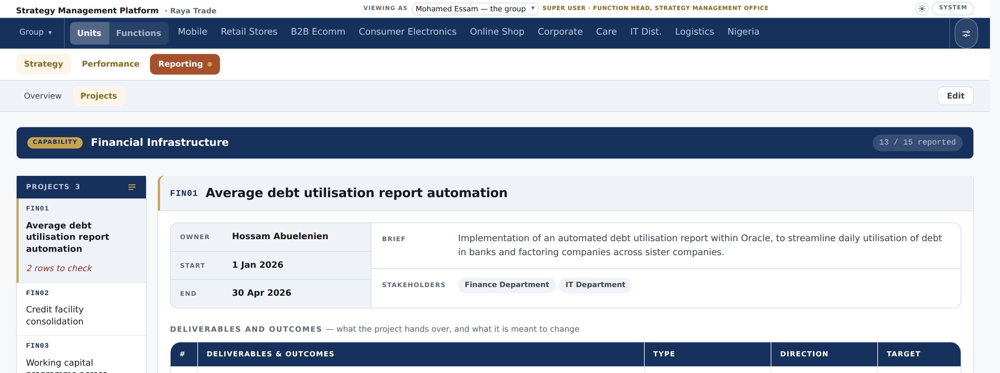
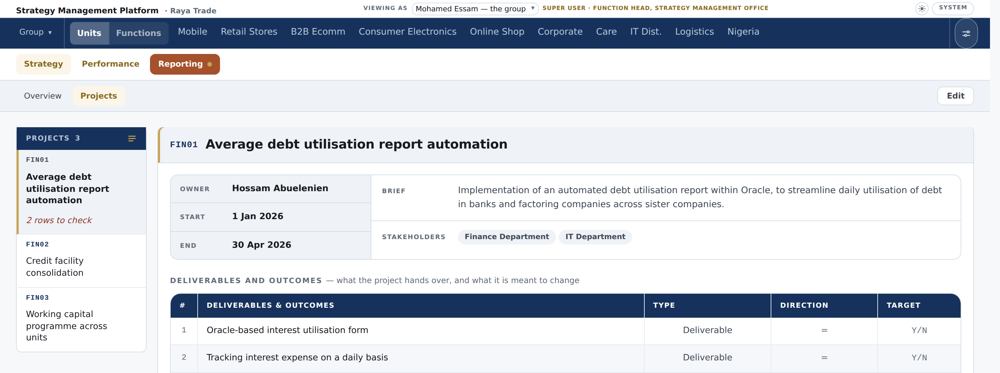
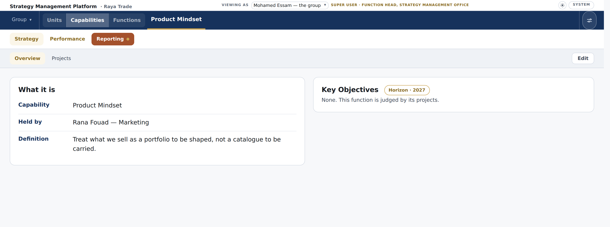

A supporting function’s projects are now the function’s own, and the worked example carries no capability at all. That is the truth of Raya’s tenant — and it leaves the word capability with nothing behind it. This is the round that gives it somewhere to live.
“capability is something Strategic and the capability is either planned in the form of a pillar or in the form of an overview and projects … the problem with having the capability hidden in the functional plans is confusing for the whole structure” Islam, 12 September
“one more thing is the ability to turn functional projects to a capability and vice versa.” Islam, 12 September
Where the last round got toUntil this morning the last round was invisible: the demo still shipped its eight boxes, so Finance’s Projects page still drew a navy CAPABILITY band over three projects already coded FIN01–FIN03. That is fixed and on the branch.
Finance · Projects

A capability is strategic — the group decides it is worth building — so it belongs on the strategic side of the navigation, beside the business units. It is held by a function head, and it has pages of its own.
Why a third side rather than putting capabilities in with the units. Measured on this tenant at a 1500px window: the row is 1485px wide and the ten units already use 1424 of it — 61px left. Adding capabilities to that list overflows on an ordinary laptop the day a second one is created. A side of its own shows one list at a time, so the row stays the length of whichever list you are in. And it says what the three things are: a unit, a capability and a function are not the same kind of thing, which is the whole of what this round is about.
A side with nothing behind it is not drawn. A tenant with no capabilities — which is every tenant today — sees the two-part switch it has now. The third appears when the first capability is created, and goes if the last one is removed.
What a capability’s pages areThe same pages a supporting function has, because a capability is planned the same two ways: pillars, or an overview and projects. Nothing new is drawn — what changes is that the word is true where it appears.

A function starts three projects; a year later two of them turn out to be one strategic thing. That should cost a press, not a re-upload. The control sits on the function’s own Projects page, where the projects are.
Not all of them, or a function whose five projects contain one capability cannot say so. The ones left behind stay the function’s.
The capability is a strategic entry from that moment: its own place beside the business units, its own definition and key objectives written on it afterwards. It is created in the overview and projects form — projects cannot become a capability planned as pillars, because a pillar is not a project.
MKT01 and MKT02 become this capability’s
PM01 and PM02; Marketing’s remaining project becomes
MKT01. A code says where a project lives, so it follows the project.
Every figure, every milestone and every reported number stays exactly where it is —
nothing is renumbered underneath.An archive is filed first, so the way back is Setup › Import & storage — the same place a removed pillar or project goes.
This half is already built. Removing a capability offers to keep its projects, and since the last round the function itself is one of the places they can go — so the dialog you photographed on the 11th, the one that said “there is nowhere for them to go”, can no longer happen.
Demoting everything is the same act as removing the capability: one dialog, not two. The codes move back, and the ids never move at all.
Four things to settle before this is builtEach has a recommendation. Say yes to all four and I build it; change any of them and I build that instead.
Creating a strategic entry and destroying one are the same kind of act as writing a plan, which is the office’s. Holding one is a different question — your own earlier words were that capabilities are “held by function heads”.
Three doors already exist: Setup, the guided plan builder, and step 5 of the client set-up flow, which already draws a greyed-out “capability” choice marked Later.
The cycle board’s rule is that every subject that reports has a row. If a capability has its own score and its own submission, it is a subject.
Marketing was the only function carrying two boxes, so when they dissolved, one sentence had nowhere to go: “Treat what we sell as a portfolio to be shaped, not a catalogue to be carried.” That is an intention about shaping a portfolio, not a description of what Marketing does day to day.